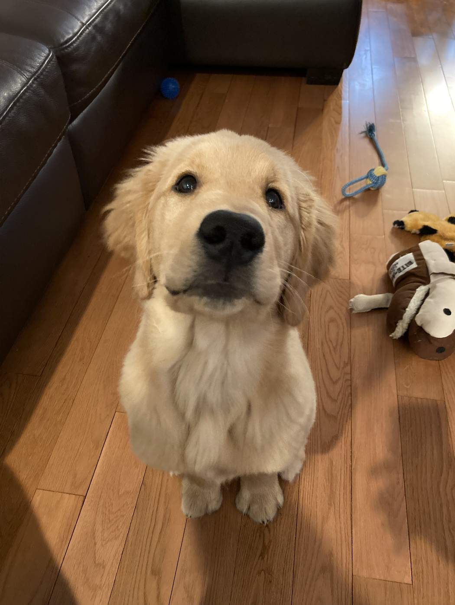
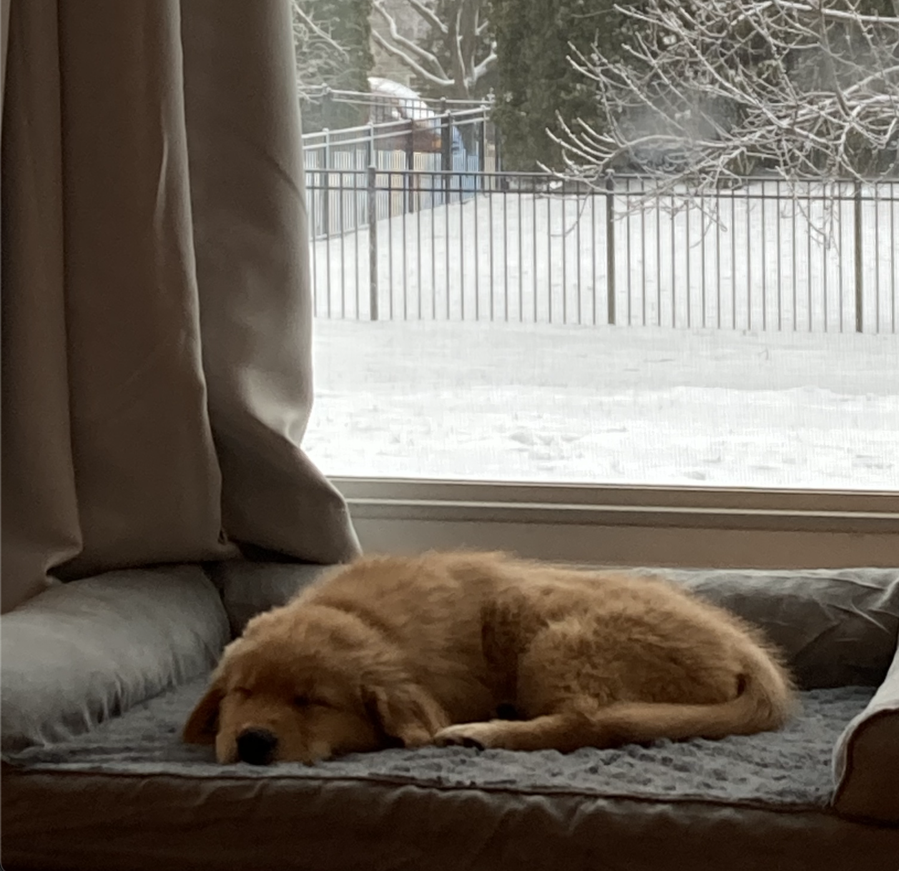
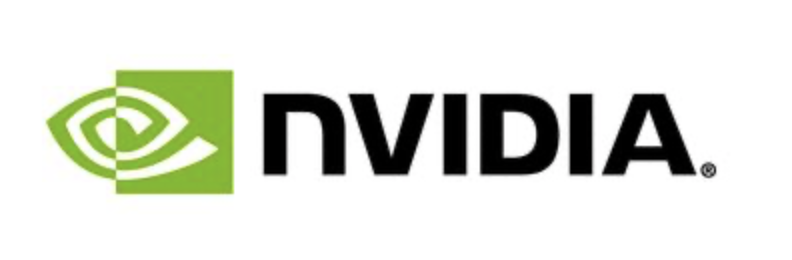
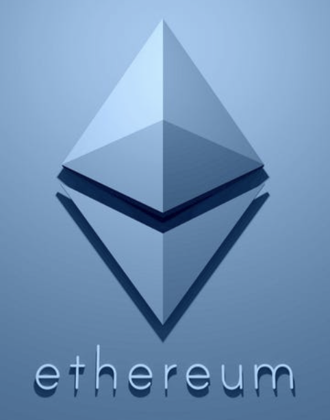
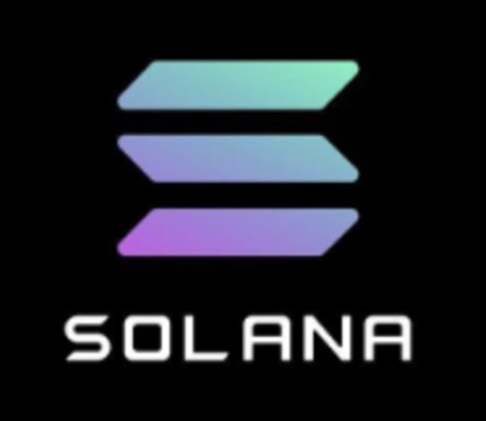

My Puppy
Over quarantine, I got a Golden Retriever puppy named Griffin.
Griffin is currently 11 months old. He's purebred, and approximately 63 lbs. Griffin's favorite foods are steak, chicken, apples, and carrots.
Here are some pictures of Griffin!
 
Work Experience
I also took the last year off (more or less) interning at different companies.
I'm passionate about startups, and have a strong programming background.
I'm interested in high-performance/distributed computing, as well as machine learning systems.
At Verkada, I worked as a Computer Vision Engineering Intern. Verkada is based in San Mateo, California.
At NVIDIA, I worked as a Deep Learning Software Intern. NVIDIA is based in Santa Clara, California.

At Bubble, I worked as a Software Engineering Intern. Bubble is based in New York, New York.

At Yext, I worked as a Software Engineering Intern. Yext is based in New York, New York.
Hobbies
I'm very interested in cryptocurrencies and blockchain technologies. A fun way to be active in the space is to follow popular NFT projects. I'm currently in the process of helping an artist to make their own NFT collection!

